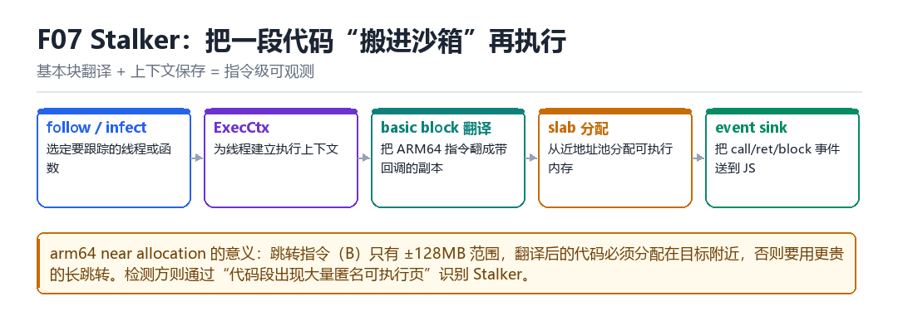
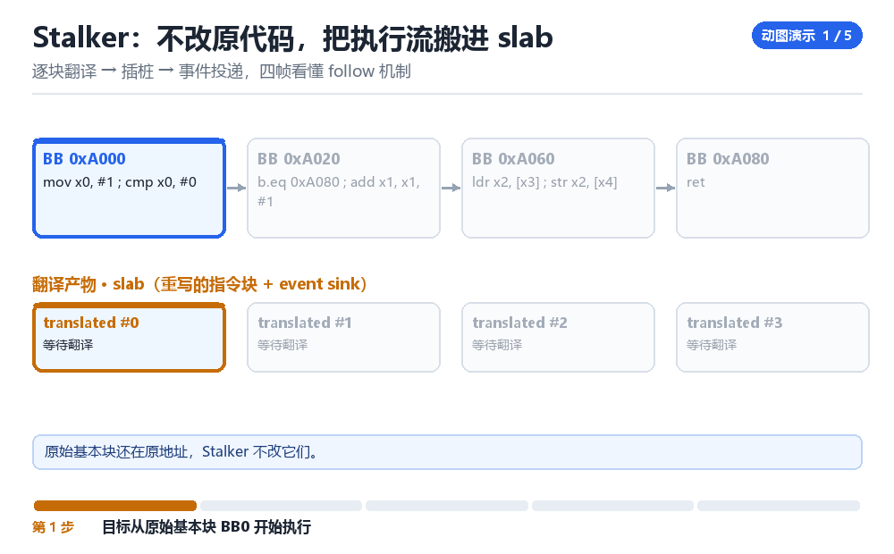

Frida Stalker 原理与修复
follow/infect、ExecCtx、basic block 翻译、slab、event sink、arm64 near allocation
把一段代码“搬进沙箱”再执行，就得到了指令级可观测性。
7.1 五步流程

follow/infect：选定要跟踪的线程或函数。ExecCtx：为线程建立执行上下文，保存现场。- basic block 翻译：把 ARM64 指令复制成带回调的副本。
- slab 分配：从近地址池分配可执行内存放副本。
- event sink：把 call / ret / block 事件送到 JS。
7.2 为什么必须“近地址分配”
ARM64 的 B 指令只有 ±128MB 的跳转范围。翻译后的代码如果离原代码太远，就得用更贵的长跳转（LDR + BR），性能与实现复杂度都会上升。所以 Stalker 会尽量在目标附近分配内存。
7.3 检测方怎么看 Stalker
| 痕迹 | 说明 |
|---|---|
| 大量匿名可执行页 | 翻译副本的存放区 |
| 代码段出现跳转密集区 | trampoline 特征 |
| 执行速度骤降 | 每条指令都要过一遍 |
| 特定线程被暂停 | infect 时会挂起目标 |
7.4 本章自测
- basic block 翻译具体做了什么？
- 为什么需要 near allocation？
- Stalker 会留下哪些痕迹？
- 什么场景下值得用 Stalker，什么场景不值得？
7.5 深入：翻译后的代码长什么样
原本的一条 MOV X0, #1 会被复制过去，但每个基本块的首尾会插入“回调 + 条件跳转”。所以翻译后的代码体积通常是原来的数倍，且充满了 B 与 BL。
block_0:
BTI c
MOV X0, #1 // 原指令
BL on_block_event // 插入的回调
B block_1 // 跳到下一个基本块7.6 实战：什么时候该用 Stalker
| 场景 | 适合 | 原因 |
|---|---|---|
| 找算法入口 | 是 | 能看到完整执行路径 |
| 长期监控 | 否 | 开销太大 |
| 抓解密循环 | 是 | 指令级可见 |
| 性能敏感路径 | 否 | 会改变时序 |
7.7 原理推演：为什么“翻译”比“模拟”快
翻译是把原指令复制成一份“带回调的副本”，然后直接执行副本——CPU 跑的还是原生指令。模拟是“逐条解释执行”，每条都要走一次解释器。前者快一到两个数量级。
| 方式 | 执行速度 | 实现复杂度 |
|---|---|---|
| 翻译（Stalker） | 接近原生 | 高 |
| 解释（模拟器） | 慢 10~100 倍 | 中 |
| 硬件 trace | 原生 | 最低（但功能受限） |
这也解释了 Stalker 的定位：它适合“短时间、需要明细”的场景，不适合长期开着。
7.8 数据细节：翻译后的代码膨胀比例
| 代码类型 | 膨胀比例 | 说明 |
|---|---|---|
| 简单算术 | 3~5 倍 | 每条后加回调 |
| 调用密集 | 5~10 倍 | call/ret 都要拦 |
| 循环密集 | 2~4 倍 | 基本块复用 |
7.9 深入：ExecCtx 里存了什么
ExecCtx 是“这个线程正在被跟踪”的上下文：它保存了当前的基本块、返回地址栈、以及一些寄存器快照。每次进入/离开被跟踪的代码，都要更新它。
| 字段 | 作用 | 不维护的后果 |
|---|---|---|
| 当前 block | 知道在哪 | 事件错乱 |
| 返回栈 | 跟踪 call/ret | 栈深度错 |
| 寄存器快照 | 支持读写 | 读到脏值 |
所以 Stalker 的“正确性”高度依赖对 ABI 的精确理解。写错一个寄存器保存，表现就是“偶尔崩”。
7.10 深入：为什么“infect”要挂起线程
因为要在“线程不执行”的时候，把它的执行流重定向到翻译后的代码。如果线程正在跑，改它的入口就是竞态。
1. suspend(thread)
2. 保存现场
3. 把“下一条指令”指向翻译版本
4. resume(thread)7.11 实战：用 Stalker 抓一次解密循环
Stalker.follow(Process.getCurrentThreadId(), {
transform(iterator) {
let ins = iterator.next();
while (ins) { send(ins.address + ' ' + ins.mnemonic); ins = iterator.next(); }
}
});
// 记得在目标代码跑完后 Stalker.unfollow()现场：从看见调用到看见每一条指令
你在 open 上挂了 Interceptor，日志漂亮地显示它被调了 200 次，可你还是不知道这 200 次分别是从哪几条分支走进来的、谁在循环里反复开同一个文件。于是你打开 Stalker.follow()，目标瞬间慢了半拍，/proc/<pid>/maps 里冒出十几段没有文件名的可执行页，logcat 开始刷 event。你想要的可观测性到手了，代价也一并到手了。
Stalker 的做法不是“打更多断点”，而是把执行流整体搬进一个沙箱：原代码一个字节不改，逐块复制成带回调的副本，CPU 跑的仍是原生指令。理解这一点，才能明白为什么比对代码段哈希抓不到它，也才能明白为什么“多出来的页”和“变慢的时序”才是它真正的破绽。
逐块翻译 → 插桩 → 事件投递，四帧看懂 follow 机制

把一次 follow 拆成八拍
- JS 的 Stalker.follow(tid, opts) → 对该线程的 ExecCtx → 建/取执行上下文、保存寄存器现场 → 结果：这条线程有了专属的翻译状态与 slab 池，别的线程不受影响。
- Stalker → 对目标线程 → 短暂 suspend（infect 模式下连其它线程一起挂起） → 结果：改 PC、改分支目标时不会有线程正跑在半途，避免踩到执行到一半的指令。
- Stalker → 对当前 PC 指向的基本块 → 逐条解码，识别分支 / 调用 / 返回作为边界 → 结果：切出一个 basic block，得到这张“待翻译清单”。
- Stalker → 对 slab 分配器 → 在靠近原代码的地址池里申请可执行页（arm64 near allocation） → 结果：
B/BL的 ±128MB 跳转范围够用，不必退化成LDR + BR这种更贵的长跳转序列。 - Stalker → 对复制出的指令 → 在块头块尾插事件发射与现场保存，把分支目标改写成翻译块地址 → 结果：原代码一个字节没动，执行流被整体搬进副本，副本之间首尾相接。
- CPU → 对翻译块 → 原生执行（不是逐条解释） → 结果：性能接近原生，只在插桩点付额外开销；这是它比模拟器快一到两个数量级的原因。
- 翻译块 → 对 event sink → 按 call / ret / exec / block 类型投递事件并由 Gum 聚合 → 结果：JS 侧 onReceive 一次拿到一批带地址的事件数组，而不是每个事件回一次 JS。
- 遇到尚未翻译的新块 → 回到第三拍重新解码 → 结果：边跑边翻译，热路径逐渐被 slab 缓存住，冷路径每次都要多付一次翻译成本。
复现：只跟一个函数，别整进程跟着
Stalker 的正确用法是定点、短时、必 unfollow。下面这段脚本在 open 的 onEnter 里 follow、onLeave 里 unfollow，只留 call 事件，并把 libc 自身的范围用 Stalker.exclude 排除掉——否则跟踪里会全是 ART 与 libc 的噪声，还把 UI 拖死。
// stalk.js —— 只跟 open 这一次调用的内部调用链
const target = Module.findExportByName('libc.so', 'open');
Interceptor.attach(target, {
onEnter: function (args) {
this.tid = Process.getCurrentThreadId();
Stalker.follow(this.tid, {
events: { call: true, ret: false, exec: false },
onReceive: function (events) {
// call 事件按 [from, to, depth] 三元组扁平排列
send({triples: Math.floor(events.length / 3)});
}
});
},
onLeave: function (ret) {
Stalker.unfollow(this.tid);
Stalker.garbageCollect();
}
});
# 另一个终端：数一数 follow 期间多出来的匿名可执行页
frida -U -f com.example.app -l stalk.js -o stalk.log
adb shell 'cat /proc/$(pidof com.example.app)/maps' | grep 'r-xp' | grep -v '/' | wc -l算成功：onReceive 收到 triples > 0，stalk.log 里的调用链能追到 open 的上游；匿名可执行页数在 follow 期间明显上涨，unfollow 加 garbageCollect() 之后回落。算失败：triples 一直是 0——多半是 onLeave 和 onEnter 不在同一条线程上、this.tid 已经失效，或者事件类型全设成了 false；页数不回落说明 slab 没被回收，长期开着会让目标越来越慢；整进程 Stalker.follow() 又不加 Stalker.exclude，常见表现是 UI 直接卡死——那是失败，不是“跟踪得细”。
| 现象 | 根因 | 处理方式 |
|---|---|---|
| 匿名可执行页暴涨 | slab 为每个块分配副本 | unfollow + Stalker.garbageCollect() |
| 目标变慢 3～10 倍 | 每个块都发射事件 | 只留一种 event、缩小 follow 范围 |
| 跳转目标地址异常远 | near allocation 未命中 | 确认 arm64 邻近池，避免长跳转退化 |
| 跟踪里全是 libc / ART | 没排除系统库 | Stalker.exclude({base, size}) |
| JIT 代码事件断续 | 自修改代码使缓存失效 | 缩短 follow 窗口，别假设缓存常驻 |
“不改原指令、另建影子执行流”这套思路，在 KPM 部 M03 ARM64 指令 Hook 与 Text Shadow 会被搬到 EL1：Text Shadow 同样是保留原 text、在影子区放带桩的副本；M04 ARM64 内核单步 Trace 则是同一目标的极简实现。LSPosed 部 L03 多模块回调与去优化 讨论回调链时，也会撞上“观测本身让被观测对象变形”这同一笔代价——插桩越细，你看到的就越不是原本的行为。